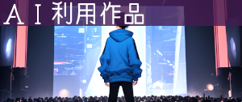
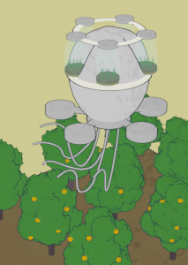
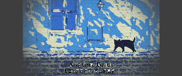
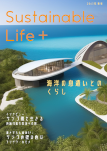

作品紹介
1. AIを活用した小説の執筆
半永久的に作品を発表し続けるために、AIを創作活動に積極的に取り入れています。
ネット上で創作活動を始めたのは2009年からでしたが、2018年からAIを利用した創作活動に興味を持つようになり、プログラミングの勉強を始めました。
七度文庫さんや星新一賞における「作家ですのよ」プロジェクトさんといった先人がいらっしゃったお陰で、私も思い切ってAIを用いた創作の世界に飛び込むことができました。
当初は「ロゾルス」と名付けたAIの開発に取り組んでいました。マルコフ連鎖から始めて、LSTM、GPT-2を基盤にしておりました。
現在はChatGPTやOpenAIの提供するAPI、小説執筆を支援するサービスである「AI BunCho」や「AIのべりすと」を利用することが多いです。
始めた当時は現在のように高精度な文章を生成できなかったので、試行錯誤の連続でした。
意味の通らない文章の山の中でかすかに意味を感じる文章と出会った時の感動は、忘れられません。
全文に使うことも試しましたがやはり難しかったこともあり、アイディアやあらすじ、文章の一部に利用するといった方法を模索する日々が続きました。
私は、AIを使って良い作品を作るためには、まずは私自身が良い作品を作れる実力を身に付けなければ、AIに落とし込むこともできないと考えていました。
そうした中で、AIの文章をアイディアとして利用した小説で第1回かぐやSFコンテストの最終選考に残ることができ、私の中できっかけを得ることができました。
その後、GPT-2を本文の一部に用いた小説で第9回日経「星新一賞」優秀賞をいただくことができ、大変うれしかったです。
AIを利用して制作した主な作品をご紹介します。
・文学賞関連
『あなたはそこにいますか？』
仮想世界にて作家AIが書いた小説である大きな樹の枝葉を剪定することで校正作業をするアルバイトのお話です。一部にGPT-2を利用しています。
2022年 2月、第9回日経「星新一賞」一般部門優秀賞（図書カード賞）に入賞しました。AIを利用して執筆した小説として史上初めて文学賞に入選しました。公式より電子書籍が無料配信されています。
制作過程については、エッセイ「3週間で100篇小説を書いて、AIを利用した小説で史上初めて星新一賞に入選した話」にて解説しています。
2023年2月23日には、朝日新聞様の天声人語にて本作を取り上げていただきました。
『壊れた用務員はシリコン野郎が爆発する夢を見る』
教室がドローンのように飛び回り、シリコンの教師が授業をする未来の学校で働く用務員アンドロイドのお話です。アイディア制作にAIを利用しています。
2020年 7月、第1回かぐやSFコンテストの最終候補に選出されました。AIを使った小説が文学賞で選考を通過したのは、第3回星新一賞一次選考通過の『コンピュータが小説を書く日』以来、史上2作目です。
制作過程については、エッセイ「AIを使った小説が文学賞の選考を通過した話」にて解説しています。
『グータッチ』
小説執筆が人気eSportsになった近未来。主人公は、ライバルであり友人である作家ＡＩ・第六筆魔王と切磋琢磨していた。
第10回日経『星新一賞』最終候補。
本作品は執筆時に執筆支援AI「AI BunCho」を利用しました。
『青い壜はいつもそこにある』
9原色を感覚することで得られる夢のような現象「心象スケッチ」を販売する企業で、抗鬱色を探索する社員ユージが、心象スケッチの中の存在「アオ」に心奪われていくお話です。アイディアの一部にAIを利用しています。
2021年 8月、第2回かぐやSFコンテストの選外佳作に選出されました。
（非AI利用作品）
『碧落にさようなら』
手首から風船が生えている人類が、「縁起切り」という死神に紐を切られることになるお話です。
第2回日本SF作家クラブの小さな小説コンテストにて一次選考を通過しました。
・出版物
『心、ガラス壜の中の君へ』
イメージ画像
オレンジを過保護に育てる気球型ドローンのお話です。タイトルと本文に小説執筆支援サービス「AI BunCho」を使用しています。
Kaguya BooksのSFアンソロジー『SFアンソロジー 新月／朧木果樹園の軌跡』（社会評論社より2022年8月刊行）収録。
「夏の終わり、君と見た花火の色」
二十年前からやってきた女子生徒に、AIを使った小説執筆を紹介するタイムスリップ青春SFです。
2022年9月に小説執筆支援サービス「AI BunCho」主催の大曽根さんが企画されたクラウドファンディングにて制作された書籍『AIに手伝ってもらったら物語が創れた件』に収録されております。
本小説は「AI BunCho」を使って、タイトルと一部の文章を自動生成しながら執筆しました。「AI BunCho」のクラファン企画ということもあり、作中では主人公たちがAIを利用して執筆するシーンも描いています。
『水面の遺伝子』
都市が海の下に沈んだ惑星に取り残された作家アンドロイドと絵描きアンドロイドが、久しぶりに現れた人間と邂逅する物語です。
作品のアイディアは、AIを使って書いたTwitter小説を使用しています。
本作は、元々Kindleにてセルフパブリッシングしていたものですが、2019年に小説執筆AIの開発に取り組まれていたBooks&Company社様よりお声がけいただき、電子出版いただいたものです。
（非AI利用作品）
『ニートが儲かる時代へ――バイオベーシックインカム体験レポート』
自らの血液中を流れる糖を使って発電し、仮想通貨を採掘することで働かずとも暮らせる近未来を描いた物語です。
SF作家の樋口恭介さんらが運営するWebマガジン「anon press」様にて掲載されました。
・個人活動
『小説執筆AI「ロゾルス」がツイッター小説を書いてみた』
AIを利用して執筆した140字小説を計490作掲載しています。
本作品は、元々2018年6月より『小説家になろう』にて掲載していましたが、2022年10月に運営から排除され、発表の場を失ったため、別の場所にて公開しています。
本件がきっかけとなって誹謗中傷を受けることにもなりました。私は、言葉の暴力に抗い続けます。
『AI小説百話』
2020年12月から2021年3月にかけて100日間連続してAIを利用して小説を執筆し、合計100作品を公開しました。
長期に渡ってAIを用いた創作活動に向き合い創作の限界に挑戦できたことは、私の貴重な財産となっています。
『砂漠のクジラ』

新人類に飼育されている少年と少女が、砂漠を走る船に乗せられて、砂漠を泳ぐ機械のマグロを釣るための疑似餌にされながら、懸命に生きる物語。
本小説は、小説執筆支援サービス「AI BunCho」を使って、あらすじと一部の文章を自動生成しながら執筆しました。
表紙画像は、waifu diffusionのtxt2imgとimg2imgを組み合わせて作りました。
2. AIを活用するノウハウの解説
私自身、先人の方々から勇気をいただいて今があるので、未来のクリエイターのための道作りにも積極的に取り組んでおります。
AIを活用した創作活動においては、クリエイター自身がきちんとビジョンを握っておく必要があると私は考えております。
しかし、それは一朝一夕にできるものではありません。私自身、今でも「AIに書かされている」と感じることがあります。
AIを利用するということは、制御できない要素を自分の創作活動の中に持ち込むということです。
「全て自分で制御できなければ創作活動とはいえない」という意見もあるかもしれません。
しかし私は、それも創作活動であると思っています。
例えば、映画というものは脚本家、作曲家、カメラマンや小道具スタッフといった多くの人によって作られていますが、作品自体は監督の作品として認知されています。
それは、監督が確固たるビジョンをもって全体を統括しているからです。
AIを用いた創作もそれと同じで、AIに部分要素の制作をサポートしてもらいながら、全体としては人間が統括することが重要です。
そして監督となるクリエイター自身のビジョンを骨格として作品の隅々に行き渡らせるためには、それなりの方法があると私は考えております。
クリエイターのビジョンを作品に反映させるためのAIの活用方法を多くの方にお届けし、新しいクリエイターが生まれる手助けができれば、私はうれしいです。
『あしざわ法典 ――ChatGPTを使って小説を書く方法――』

AIを使った小説執筆に長く取り組んできた経験をもとに、話題の文章生成AI「ChatGPT」を使って小説を執筆するノウハウをまとめた技法書です。2023年2月に公開後、現在までに約7500DLを達成しました。
オタク総研様にて紹介していただき（『ChatGPTで小説を執筆するノウハウが記された3万字超えの”法典”が無料公開』）、ニコニコニュース様にも掲載されました。
ChatGPTの公開から約2ヶ月後の2023年2月当時の段階では、ChatGPTを利用する際の指針は、ほとんど提案されていない状態でした。1月頃に東大の試験でChatGPTが持ち込み可になった投稿が話題になりましたが、各大学から正式な声明が出たのは4月以降でした。JDLA（日本ディープラーニング協会）が『生成AIのガイドライン』を公開したのは5月、文化庁が著作権について周知するセミナーを実施したのは6月のことです。
つまり当時は多くの人が、何を指標にすればいいのか分からず、手探りの状態だったのです。しかし私には創作活動に利用してきた経験から、自分の中で守ってきたルールがありました。もちろんそれが正しいという保証はありませんでしたが、画像生成AI登場時のような混乱は避けなければいけないと考えていました。
また、当時はChatGPTを本格的に小説執筆に導入しようという試みはなされていませんでした。一方で、私は1月末頃、「三幕構成」などの執筆技法をプロンプトに取り入れることでクオリティを改善できることに気付きました。ネットで検索しても誰も実施していない、強力なプロンプトが手の中にあったのです。Twitter（現：X）に投稿すればバズるのは間違いないと思いましたが、同時に作家の仕事を奪うことにつながりかねないという危惧もありました。
そこで私は、執筆に利用する際のマナーを強力な執筆テクニックと合わせて公開することで、注目を集めてマナーを普及させることを目指して、約一週間で原稿をまとめました。それが『あしざわ法典』です。
『【ChatGPT, LlamaIndex】アイデアが自然に湧きだす「アイデア創発支援システム」の提案』
サークル「ふんわりAIラボ」さんの技術同人誌『まめらんど vol1』に寄稿した技術解説記事です。
LlamaIndexを利用したRAGを構築することで、ストックしたアイデアから小説のネタを作る手法を提案しております。
『GPT-4VとDALL·E 3を活用して小説を書こう！』
「GPT-4V」と「DALL·E 3」を小説執筆にどう使えるのか、色々と試してみました。
小説の本文から「DALL·E 3」で画像を生成することで描写のヒントを得たり、画像からテキストを生成する「GPT-4V」を用いてシンデレラ曲線からストーリーを作る試みをしています。
『gpt-3.5-turboをオリジナル小説でファインチューニングしてみた』
自作の小説『ミューズ・クロニクル ―第十七学芸課は眠らない―』を用いて、OpenAIのgpt-3.5-turboをファインチューニングして、その結果を確認しました。
3. 新しい表現分野の開拓
AIを活用して人間の能力を拡張することで、これまで不可能だった表現が可能になってきています。そのことを証明するために、小説にとどまらず漫画やアニメーション、ゲーム、AITuberなどの新しい表現に積極的に挑戦しています。
第2回AIアートグランプリでは、初めて制作したアニメーション作品で佳作に入選しました。
最近は、一人同人アニメスタジオ「ソラタビ・スタジオ」を名乗っております。
『アスクイ』
明日を食べてしまうという生き物「アスクイ」と友達になっていく少年フィルの物語を描いたアニメーション作品です。
Stable Diffusionを用いて制作した画像を利用しています。
2023年11月、第2回AIアートグランプリにて佳作に入賞しました。
作家AITuber アシザワ・カモメ
葦沢かもめによって開発された、葦沢かもめの分身となる人工知能です。2023年3月に活動を始めました。
YouTubeにて作品をその場で執筆して朗読するライブ配信活動を行っています。コメントに反応することも可能です。2023年9月現在、活動を一時停止中ですが、近いうちに再始動します。
ChatGPTのAPIを利用しています。
『クロニクラ -Chronicler-』
ChatGPTやDALLE3、SDXL、BlockadeLabsといった生成AIを活用して制作したノベルゲームです。
フシギな世界の司書となって、異種族と本を通じてコミュニケーションしましょう！
本ゲームは、2023年11月に株式会社Witchpot様が開催された第1回生成AIゲームジャムに参加して、約2週間で制作しました。
UnityのC#はほぼ初心者でしたが、ChatGPTを活用してコーディングすることで無事に完成させることができました。既存のノベルゲームエンジンは使用せず、フルスクラッチで制作しています。
制作過程については、第1回生成AIゲームジャム主催の株式会社Witchpot様「生成AIゲームジャム vol.1開催しました」にて解説しています。
制作時間の都合上、ストーリーは第2話までしか公開できておりませんが、今後継続して更新していく予定です。
『小説執筆はeSportsになる――AIを活用して2時間で短編書いて挿絵描いて朗読動画を作るRTA』
AIを活用して、2時間で短編小説を書き上げ、挿絵を描いた上で、朗読動画を制作するRTAを行いました。
私は2019年頃より一貫して「小説執筆はeSportsになる」と言い続けておりますが、2024年になり動画生成AIが高精度化してきたことで、いよいよ現実味が増してきているように感じております。
『SustainableLife+ 2043年春号 ―未来の生活情報誌―』
2023年5月に、未来の生活情報誌をChatGPTとStable Diffusionを利用して制作しました。
架空のインタビュー記事と、SFプロトタイピング小説で構成されています。
人の感情と接続したサンゴをテーマとしています。
『けなげで不器用な』
2022年12月に、漫画をStable Diffusionを利用して制作しました。
人類がブラックホールの中心にある特異点と出逢うお話です。「第2回日本SF作家クラブの小さなマンガコンテスト」応募作。
制作過程を「AIを使って漫画を描いた話」にて解説しています。
『吟遊作家リャカ』
2020年11月より稼働していたTwitter小説を自動的に投稿するAI botです。GPT-2を使っています。現在XのAPIの関係で運用停止中。
投稿数を正確に把握していませんが、1時間に1つツイートするので、約15000作を呟いていると推定されます。
制作過程については、エッセイ「【機械文芸入門】GPT-2でTwitter小説を呟くbotを作ってみた」にて解説しています。